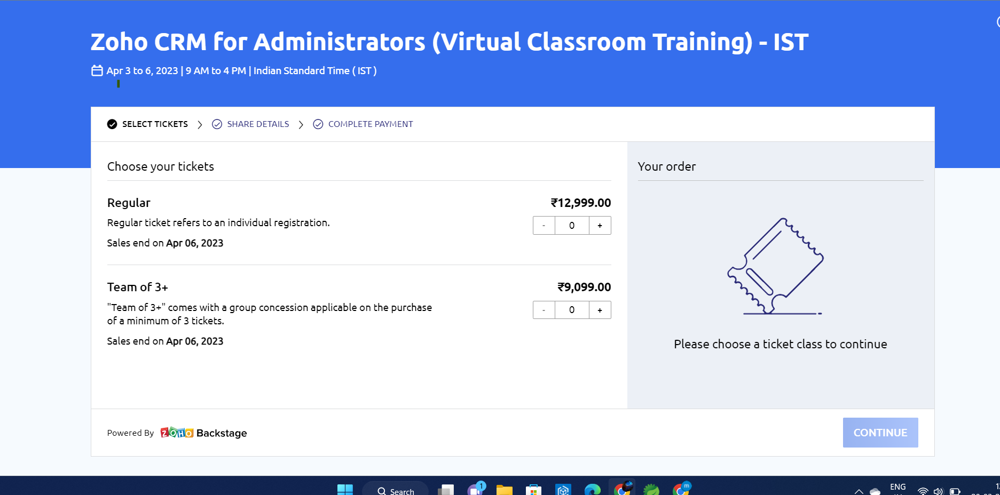

|  |
Jon Kleinberg
Tisch University Professor
Department of Computer Science
Department of Information Science
Cornell University
Ithaca, NY 14853
|
I am a professor at Cornell University. My research focuses on algorithms and networks, the roles they play in
large-scale social and information systems, and their broader societal implications. My work has been supported
by an NSF Career Award, an ONR Young Investigator Award, a MacArthur Foundation Fellowship a Packard Foundation Fellowship a Simons Investigator Award, a Sloan Foundation
Fellowship a Vannevar Bush Faculty Fellowship and grants from Facebook, Google, Yahoo,
the MacArthur Foundation, the ARO, and the NSF. I am a member of the National Academy of
Sciences the National Academy of Engineering and the American Academy of Arts
and Sciences
Link to: Contact information.
Books and Teaching
- In 2021 and 2022, Karen Levy and I taught a new course entitled Choices and
Consequences in Computing (INFO 1260 / CS 1340) The course is designed at an introductory level with
no
formal prerequisites, and covers a range of ethical, societal, and policy implications of computing and
information.
- This book is based on an inter-disciplinary course that we teach entitled Networks The
book, like the
course, is designed at the introductory undergraduate level with no formal prerequisites. To support
deeper explorations, most of the chapters are supplemented with optional advanced sections.
| boostrap |
⭐⭐⭐ |
| CSS |
⭐⭐ |
| JSON |
⭐⭐⭐ |
| MYSQL |
⭐⭐⭐ |
|
| boostrap |
⭐⭐⭐ |
| CSS |
⭐⭐ |
| JSON |
⭐⭐⭐
|
| MYSQL |
⭐⭐⭐ |
|